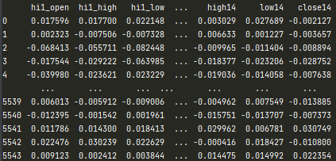
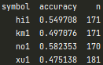

Introduction
Reinforcement learning often found in autonomous driving, the agent will control the vehicle and interacts with simulated environment or in reality, therefore it would be interesting to see whether the agent can perform well in financial market.
In this article we will implement Deep Q Networks (DQN) by using RLlib, for the those who are interested in DNQ please read this paper.
Data
For simplicity, we will use daily Heng Seng Index future data to explore this idea. Our data contains HSI future open, high, low, close log return from t0 to t-15, therefore the agent can make decision using historical data. There are total 5544 rows of data, 80% for training, 14% for validation and 6% for testing. The training set include data from 20000101 to 20171231, the validation set include data from 20180101 to 20201231, the test set include data from 20210101 to 20220619.
Model
As we said in the beginning, we will use Deep Q Networks (DQN) to train our agent, but before we can move forward we will need to setup the environment.
The agent can buy, sell, hold, cover buy then sell, and cover sell then buy on each day. When position goes to 0 from 1 or -1, we can obtain the trading profit, and we will use it as reward, however we assume there is no other cost for example, transaction cost.
During the episode, the agent can observe it's state which contain Open, High, Low, Close data with 15 days lookback and it can compute the an action based on the state, following with the positive or negative reward, the agent can update the weights of the Q-network and minimising the loss functions by using stochastic gradient descent.
Result
Conclusion
more model, pattern, min data, feature engineer